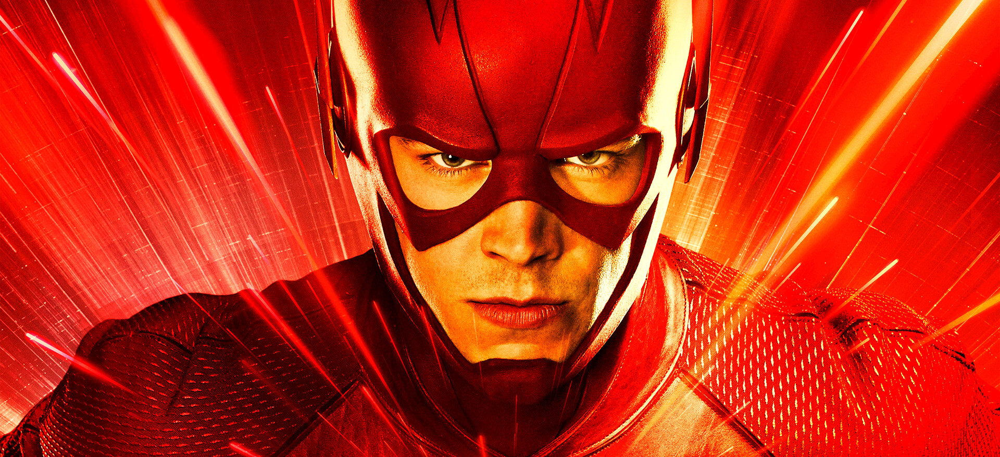

FLASH HAKKINDA BİLİNENLER
Kim Bu FLASH?
Flash aslinda tek bir kişi değil, yillar içinde bu mantoyu taşiyan birkaç karakter oldu. En bilinenleri:
- Jay Garrick (1940) — İlk Flash. Kafasinda kanatli Hermes tarzi bir miğferle koşan orijinal versiyon.
- Barry Allen (1956) — En ünlü Flash. Adli tip bilimcisiyken laboratuvarinda kimyasallara yildirim düşmesi sonucu süper hiz kazanir. Dizilerin ve filmlerin çoğu onu anlatir.
- Wally West — Barry'nin yeğeni gibi büyüyen, önce Kid Flash olan, sonra mantoyu devralan karakter. Birçok hayrana göre en hizli Flash odur.
FLASH'in Güçleri
Flash'in gücünün kaynaği Speed Force (Hiz Gücü) denen kozmik bir enerji. Sadece hizli koşmakla kalmiyor:
- Işik hizina yakin (bazen ötesinde) hareket edebiliyor
- Zamanda yolculuk yapabiliyor — hatta Barry'nin annesini kurtarmak için geçmişe gidip zaman çizgisini bozmasi meşhur Flashpoint hikâyesini doğurdu
- Moleküllerini titreştirerek duvarlardan geçebiliyor
- Süper hizli düşünüp okuyabiliyor, yaralari çok hizli iyileşiyor
FLASH'in Düşmanlari
Rogues (Haydutlar) denen eğlenceli bir düşman kadrosu var: Captain Cold, Mirror Master, Heat Wave... Ama en büyük düşmani Reverse-Flash (Eobard Thawne), yani onun sari kostümlü, kötücül aynadaki yansimasi.
FLASH İçin Tikla
Ekibe Katil